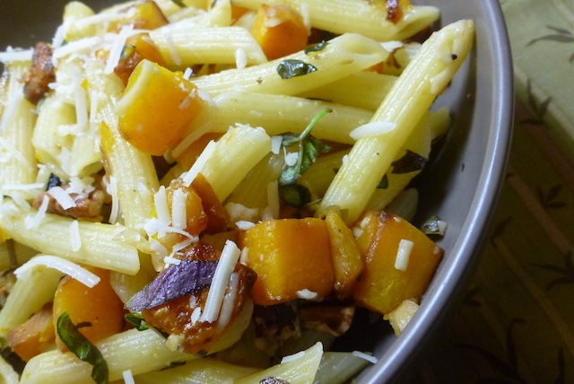

Penne with Butternut Squash and Brown Butter Sauce

"Penne Pasta with Roasted Butternut Squash and Pecans" by megabeth is licensed under CC BY-NC-SA 2.0"
Why This Recipe Works
Covering the squash speeds up its cooking while still allowing for browning.
Ingredients
- 1 pound penne pasta
- 1 tablespoon olive oil
- 1 pound butternut squash, peeled, seeded, and cut into 1/2-inch pieces
- 2 tablespoons fresh sage leaves, torn
- 3 garlic cloves, minced
- 4 tablespoons unsalted butter, cut into 4 pieces
- 1/4 cup hazelnuts, toasted, skinned, and chopped coarse
- 1 tablespoon lemon juice
- 2 ounces Parmesan cheese, grated
Instructions
- Bring 4 quarts water to boil in large pot. Add pasta and 1 tablespoon salt to boiling water and cook, stirring often, until al dente. Reserve 1/2 cup cooking water, then drain pasta and return it to pot.
- Heat oil in 12-inch skillet over medium-high heat until shimmering. Add squash, 1 teaspoon salt, and 1/2 teaspoon pepper. Cover and cook until squash is softened and browned, about 5 minutes. Add sage and garlic and cook until fragrant, about 30 seconds; add squash mixture to pasta.
- Add butter and hazelnuts to now-empty skillet and cook over medium-high heat until both are browned and fragrant, about 2 minutes. Remove skillet from heat and stir in emon juice and 1/4 cup reserved cooking water (butter will foam and sizzle). Stir hazelnut mixture and 1/2 cup Parmesan into pasta and season with salt and pepper to taste. Adjust consistency with remaining reserved cooking water as needed. Serve, sprinkled with remaining 1/2 cup Parmesan.